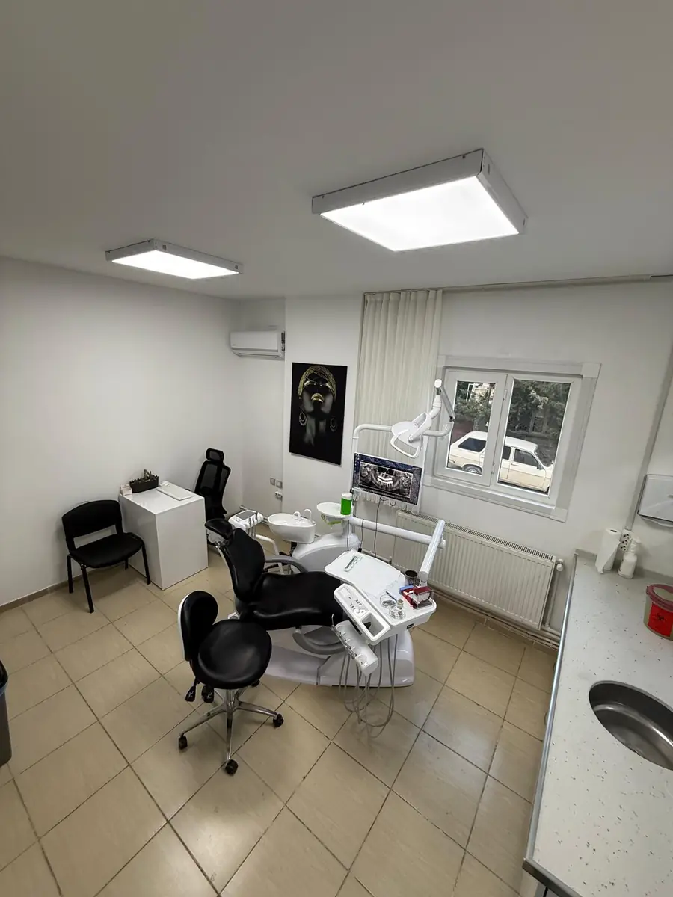
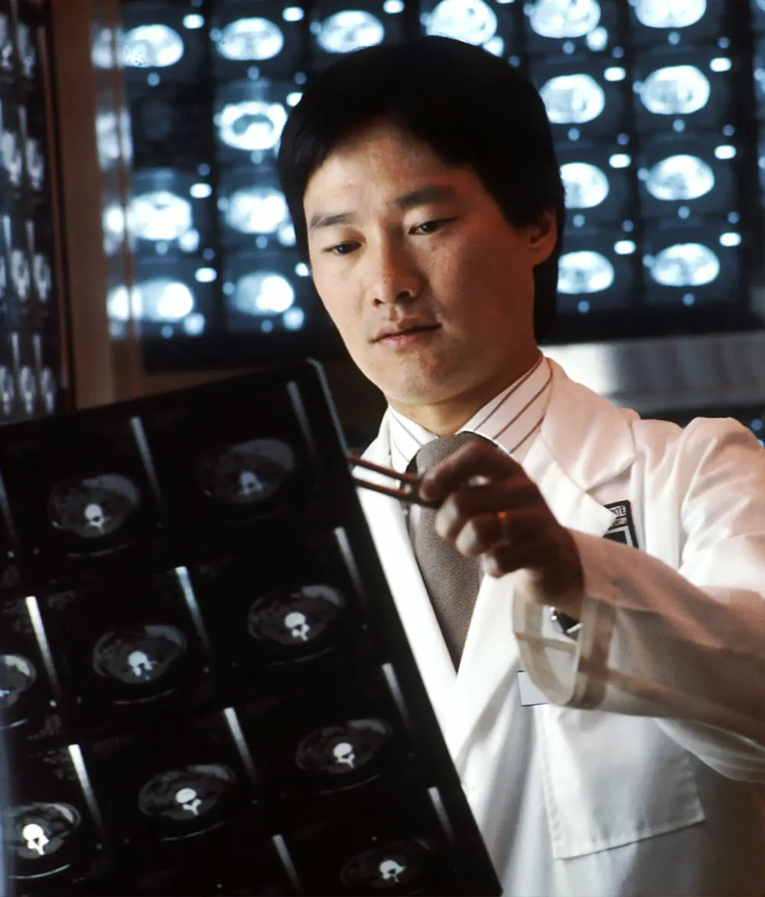
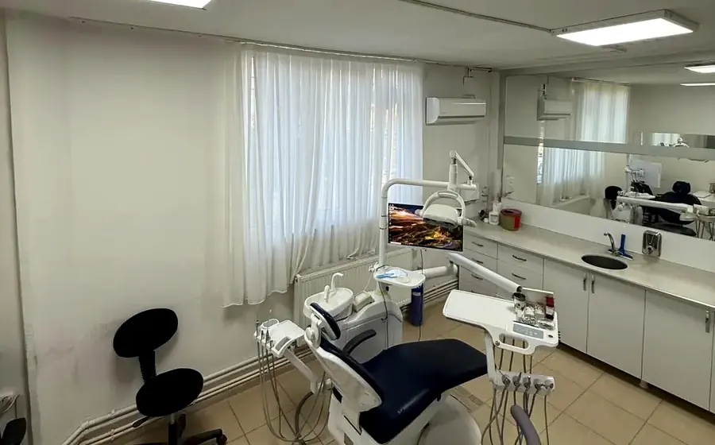
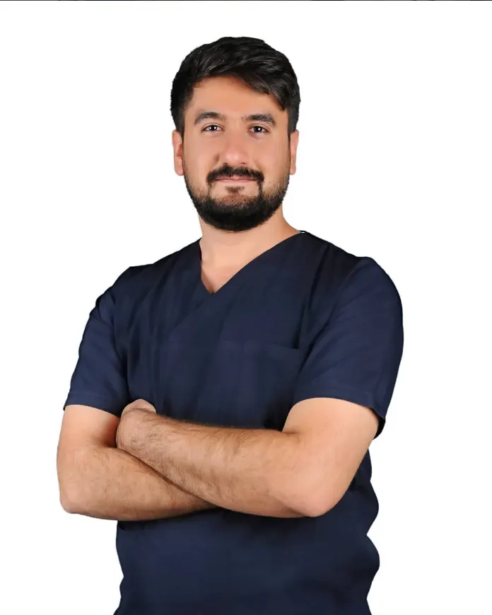

Vizyonumuz
Besni'de hastasını dinleyen, süreci sade anlatan ve doğal sonuçları önemseyen bir diş kliniği deneyimi sunmak.
Besni'de implant, dolgu, kanal tedavisi, kaplama ve estetik diş uygulamalarında özenli, sakin ve güven veren bir klinik deneyimi sunar.

Diş Hekimi Abdullah Cirit muayenehanesinde her hastanın ihtiyacı dikkatle dinlenir; tedavi seçenekleri, süreç ve bakım önerileri anlaşılır bir dille paylaşılır. Amaç, hastanın kendini rahat hissettiği özenli ve profesyonel bir klinik deneyimi sunmaktır.
Besni'de hastasını dinleyen, süreci sade anlatan ve doğal sonuçları önemseyen bir diş kliniği deneyimi sunmak.
İmplant, estetik restorasyonlar, dolgu, kanal tedavisi ve kaplama uygulamalarında hastaya özel planlama ile hizmet vermek.
Besni Diş Kliniği'nde estetik, implant, cerrahi, ortodonti ve koruyucu diş hekimliği başlıkları.

Diş rengi, formu ve yüz uyumu birlikte değerlendirilerek estetik gülüş planlanır.

Doğal görünümlü, hastanın beklentisine uygun estetik diş uygulamaları yapılır.

Diş rengini açmaya yönelik işlemler hekim kontrolünde güvenli şekilde planlanır.

Estetik beklentisi yüksek dişlerde dayanıklı ve doğal görünümlü kaplama seçeneği.

Renk, form ve madde kaybı olan dişlerde estetik ve fonksiyonel kaplama planlaması.

Ön dişlerde ince porselen yüzeylerle doğal, zarif ve estetik gülüş düzenlemesi.

İmplantlardan destek alan sabit protezlerle çiğneme ve estetik konfor sağlanır.

Eksik dişlerde kemik yapısı ve ağız sağlığı değerlendirilerek implant planlanır.

Üst çenede implant için gerekli kemik hacmini destekleyen tamamlayıcı cerrahi işlem.

Çocuklarda koruyucu uygulamalar, kontrol ve yaşa uygun tedavi yaklaşımı.

Ön dişlerde form, renk ve küçük aralıkları düzenleyen estetik kompozit uygulama.

Standart çekimle alınamayan dişlerde planlı ve kontrollü cerrahi yaklaşım.

Gömük veya yarı gömük yirmi yaş dişlerinde muayene sonrası cerrahi planlama yapılır.

Çapraşık, aralıklı veya yanlış hizalanmış dişler için ortodontik tedavi seçenekleri.
Besni'de modern klinik ortamı, dijital görüntüleme ve hassas uygulama protokolleriyle tedavi süreci daha öngörülebilir ilerler. Randevu süreci ve klinik deneyimi mümkün olduğunca sakin ve konforlu ilerler.

Her hasta için ağız yapısı, beklenti ve zaman planına göre net bir yol haritası hazırlanır. Estetik uygulamalarda yüz hatlarıyla uyumlu, doğal görünen sonuçlar hedeflenir.

Besni'de implant, estetik restorasyonlar, dolgu, kanal tedavisi ve kaplama uygulamalarında hastaya özel planlama ile hizmet verir. Tedavi planı, hasta kararını rahatça verebilsin diye sade ve açık şekilde anlatılır.
Tedavi seçenekleri, süreç ve bakım önerileri anlaşılır bir dille paylaşılır.
Randevu süreci ve klinik deneyimi sakin ve güven veren bir akışta ilerler.
Yüz hatlarıyla uyumlu, doğal görünen sonuçlar hedeflenir.
Adres, telefon ve çalışma saatleri üzerinden kliniğimizle kolayca iletişime geçebilirsiniz.